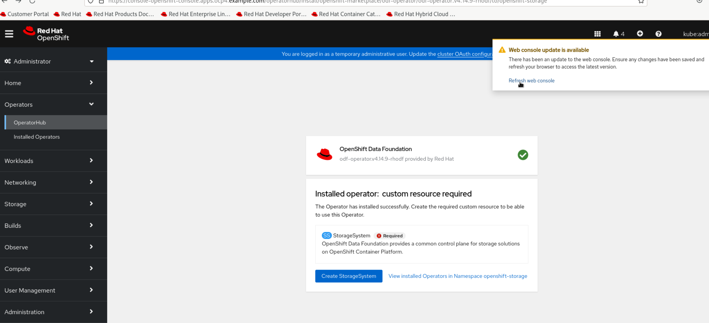
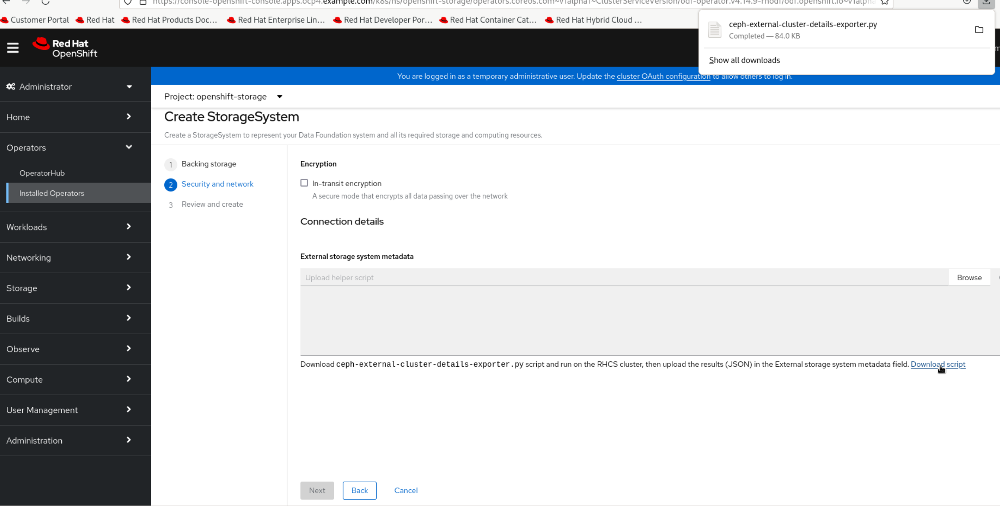
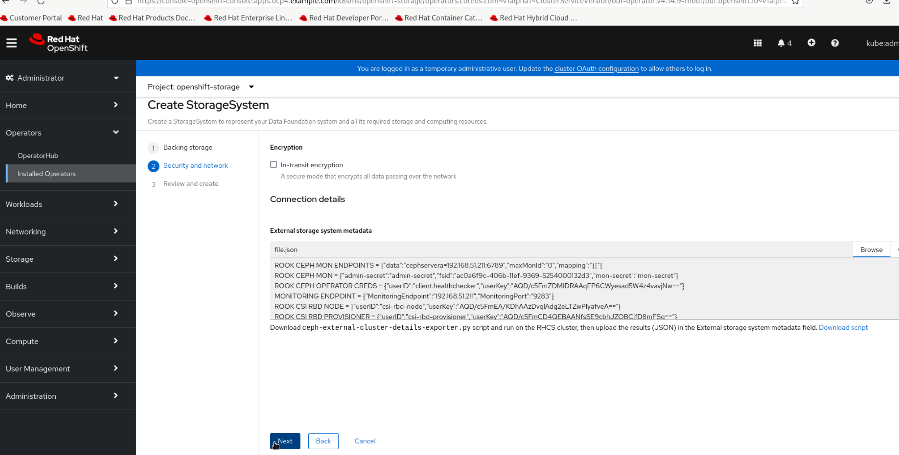
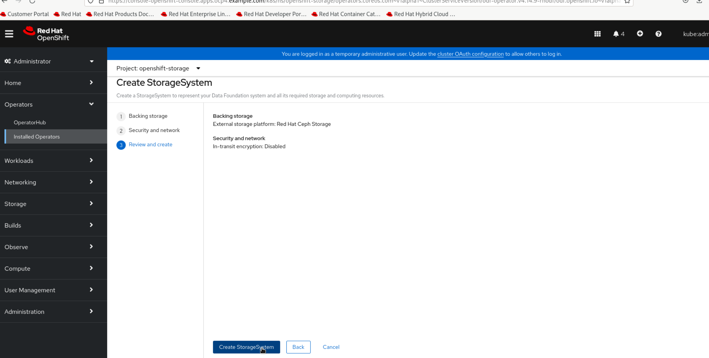

Create ODF StorageSystem
-
Click on the
Refresh web consolepop-up option on top right corner. -
When the page is refreshed, click on
Create StorageSystembutton.You may need to navigate to the Operators then Installed Operators and then click on OpenShift Data Foundation option to get the option to create storage system if you do not see it after page refresh. -
Select Create an external storage platform option and make sure Red Hat Ceph Storage option is selected, then click on Next button.
-
Click on the Download script option on the next page.
 -
Access the lab outside the gui session to login to
workstationvm asstudentuser. -
Copy
ceph-external-cluster-details-exporter.pyscript from workstation vm to utility vm.scp /home/student/Downloads/ceph-external-cluster-details-exporter.py lab@utility:/tmp/ -
Login to
utilityvm aslabuser.ssh lab@utility -
From there, copy the
ceph-external-cluster-details-exporter.pyfile tocephserveravm.[lab@utility ~]$ scp /tmp/ceph-external-cluster-details-exporter.py root@cephservera: -
Login to
cephserveraasrootuser.ssh root@cephservera -
Run the script on cephservera with arguments
--rbd-data-pool-name volumes.python ceph-external-cluster-details-exporter.py --rbd-data-pool-name volumesSample output[root@cephservera ~]# python ceph-external-cluster-details-exporter.py --rbd-data-pool-name volumes [{"name": "rook-ceph-mon-endpoints", "kind": "ConfigMap", "data": {"data": "cephservera=192.168.51.211:6789", "maxMonId": "0", "mapping": "{}"}}, {"name": "rook-ceph-mon", "kind": "Secret", "data": {"admin-secret": "admin-secret", "fsid": "ac0a6f9c-406b-11ef-9369-5254000132d3", "mon-secret": "mon-secret"}}, {"name": "rook-ceph-operator-creds", "kind": "Secret", "data": {"userID": "client.healthchecker", "userKey": "AQD/c5FmZDMIDRAAqFP6CWyesad5W4z4vavjNw=="}}, {"name": "monitoring-endpoint", "kind": "CephCluster", "data": {"MonitoringEndpoint": "192.168.51.211", "MonitoringPort": "9283"}}, {"name": "rook-csi-rbd-node", "kind": "Secret", "data": {"userID": "csi-rbd-node", "userKey": "AQD/c5FmEA/KDhAAzDvqlAdg2eLTZwPlyafveA=="}}, {"name": "rook-csi-rbd-provisioner", "kind": "Secret", "data": {"userID": "csi-rbd-provisioner", "userKey": "AQD/c5FmCD4QEBAANfsSE9cbhJZOBCjfD8mFSg=="}}, {"name": "rook-ceph-dashboard-link", "kind": "Secret", "data": {"userID": "ceph-dashboard-link", "userKey": "https://192.168.51.211:8443/"}}, {"name": "ceph-rbd", "kind": "StorageClass", "data": {"pool": "volumes", "csi.storage.k8s.io/provisioner-secret-name": "rook-csi-rbd-provisioner", "csi.storage.k8s.io/controller-expand-secret-name": "rook-csi-rbd-provisioner", "csi.storage.k8s.io/node-stage-secret-name": "rook-csi-rbd-node"}}] -
Exit from the
cephserveraand then from theutilityvm’s session to be back on theworkstationvm. -
Copy the json output generatedf by
ceph-external-cluster-details-exporter.pyscript on cephservera and paste it infile.jsonon workstation vm.vi file.json -
Go back to the gui session of the workstation vm.
-
Click Browse button under External storage system metadata and select
file.jsonfile and then click Next. -
Click on the Create StorageSystem button on the next page.
